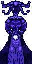
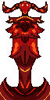

Card's o Caos
Bienvenido aventurado, estas listo para una aventura llena de caos y Cartas pues no lo dudes más, este mundo es para ti.
El orden es una ilusión que los mortales intentan construir. En Card's o Caos, esa ilusión se rompe con cada naipe. ¿Confías en tu estrategia o dejas tu destino en manos de la suerte? Estás ante un Tarot alterado por los dioses; cada vez que robas una carta, invocas el juicio implacable de Morrigan o la risa burlona de Tarkmatan. Aquí, una sola jugada puede darte la gloria eterna o quemar todos tus planes en un segundo. En esta mesa no hay turnos seguros ni ventajas permanentes. Roba tu carta bajo tu propio riesgo, desata el efecto divino y prepárate para sobrevivir al desorden del cosmos. ¿Serás el arquitecto que reine con sus cartas o una víctima más que se hundirá en el caos?

MORRIGAN
En el principio, antes de que existieran los mortales, el cosmos era un escenario vacío. Para darle sentido al vacío, Morrigan emergió de los rincones más profundos del espacio exterior. Adoptó la forma de una entidad azulada, una bufona monolítica y cósmica encargada de dirigir la gran obra de teatro que llamamos "realidad". Sus ojos en forma de cruces no muestran empatía ni ira; son dos marcas que fijan la mirada en el futuro, calculando matemáticamente cada decisión, cada robo de carta y cada muerte en el tablero. No es una bufona para hacer reír, sino una actriz trágica que se burla de los mortales que creen tener el control de sus vidas.

TARKMATAN
Tarkmatan no es simplemente un demonio destructivo (eso sería aburrido); él es el dios de la mutación forzada. En el universo de Card's o Caos, este dios rojo representa el momento exacto en el que una regla deja de tener sentido. Su cuerpo pixelado simula la textura de la lava enfriándose o de una armadura forjada en las entrañas de una estrella muerta: es el cambio constante, violento y doloroso. Él no compite contra Morrigan para ganar la partida; juega para demostrar que las leyes de ella son frágiles. Cuando un jugador invoca el poder de Tarkmatan, el dios "ciego" desgarra los hilos invisibles del destino, obligando a las cartas a mutar sus efectos en plena mesa. Es la fuerza bruta del azar que le recuerda a Morrigan que, por más perfecto que sea su guion, basta una sola chispa roja para que toda la obra de teatro se convierta en cenizas.
Caballero

Cartas

Enemigos
"Dicen las leyendas que las cartas no tienen poder por sí solas, sino que son el eco de una discusión eterna. Cuando planeas tu jugada, es Morrigan quien guía tu mano. Cuando el mazo te traiciona y todo vuela por los aires, es Tarkmatan quien ríe en las sombras." — Fragmento del Códice Primordial de Card's o Caos.